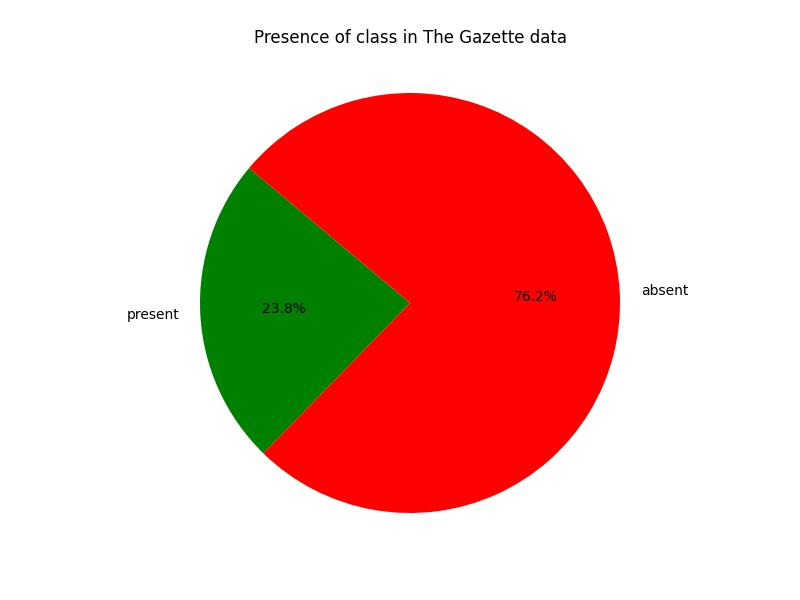

The Gazette Data Model
Environment Ontology
Documentation
View documentationQuality review
OWL Class
Relevance
Frequency in The Gazette data
| URI | Frequency |
|---|---|
| https://www.thegazette.co.uk/def/consultation#StatutoryConsultationNotification | 103351 |
| https://www.thegazette.co.uk/def/environment#EnvironmentThing | 13024 |
| https://www.thegazette.co.uk/def/environment#EnvironmentalProtectionNotice | 10928 |
| https://www.thegazette.co.uk/def/environment#ControlOfPollutionNotice | 677 |
| https://www.thegazette.co.uk/def/environment#HarboursNotice | 586 |
| https://www.thegazette.co.uk/def/environment#CleanAirNotice | 230 |
| https://www.thegazette.co.uk/def/environment#NationalParksAndAccessToTheCountrysideNotice | 194 |
| https://www.thegazette.co.uk/def/environment#WildlifeAndCountrysideNotice | 154 |
| https://www.thegazette.co.uk/def/environment#CoastProtectionNotice | 145 |
| https://www.thegazette.co.uk/def/environment#FloodPreventionNotice | 102 |
| https://www.thegazette.co.uk/def/environment#RevokeAirQualityManagementArea | 0 |
| https://www.thegazette.co.uk/def/environment#OperationOfInstallation | 0 |
| https://www.thegazette.co.uk/def/environment#VariationOfAirQualityManagementArea | 0 |
| https://www.thegazette.co.uk/def/environment#ImpactAssesments | 0 |
| https://www.thegazette.co.uk/def/environment#NewAirQualityManagementArea | 0 |
| https://www.thegazette.co.uk/def/environment#ChangeOfNationalNatureReserve | 0 |
| https://www.thegazette.co.uk/def/environment#ChangeAirQualityManagementArea | 0 |
| https://www.thegazette.co.uk/def/environment#DesignateNoiseAbatementZone | 0 |
| https://www.thegazette.co.uk/def/environment#ChangeOfFootpath | 0 |
| https://www.thegazette.co.uk/def/environment#NewNationalNatureReserve | 0 |
| https://www.thegazette.co.uk/def/environment#RevokeNationalNatureReserve | 0 |
| https://www.thegazette.co.uk/def/environment#VariationOfNationalNatureReserve | 0 |
| https://www.thegazette.co.uk/def/environment#CoastalProtectionWork | 0 |
| https://www.thegazette.co.uk/def/environment#VariationOfSmokeControlArea | 0 |
| https://www.thegazette.co.uk/def/environment#NewFootpath | 0 |
| https://www.thegazette.co.uk/def/environment#SmokeControlExemption | 0 |
| https://www.thegazette.co.uk/def/environment#EnvironmentalPermitRevocation | 0 |
| https://www.thegazette.co.uk/def/environment#RevokeSmokeControlArea | 0 |
| https://www.thegazette.co.uk/def/environment#NewSmokeControlArea | 0 |
| https://www.thegazette.co.uk/def/environment#ChangeOfSmokeControl | 0 |
| https://www.thegazette.co.uk/def/environment#EnvironmentalPermitVariation | 0 |
| https://www.thegazette.co.uk/def/environment#ImpactAssesmentsNotice | 0 |
| https://www.thegazette.co.uk/def/environment#EnvironmentalPermitApplication | 0 |
| https://www.thegazette.co.uk/def/environment#IntegratedPollutionPreventionAndControlPermitVariation | 0 |
| https://www.thegazette.co.uk/def/environment#IntegratedPollutionPreventionAndControlPermitRevocation | 0 |
| https://www.thegazette.co.uk/def/environment#IntegratedPollutionPreventionAndControlPermitApplication | 0 |
| https://www.thegazette.co.uk/def/environment#IntegratedPollutionPreventionAndControlPermit | 0 |
| https://www.thegazette.co.uk/def/environment#EnvironmentalPermit | 0 |
| https://www.thegazette.co.uk/def/environment#DeclarationOfNatureReserve | 0 |
| https://www.thegazette.co.uk/def/environment#Permit | 0 |
| https://www.thegazette.co.uk/def/environment#EnvironmentNotice | 0 |
| https://www.thegazette.co.uk/def/environment#RevokeFootpath | 0 |
Completeness

| URI | https://www.thegazette.co.uk/def/environment#ImpactAssesments |
|---|---|
| Label | None |
| Comment | None |
| URI | https://www.thegazette.co.uk/def/environment#ImpactAssesmentsNotice |
|---|---|
| Label | None |
| Comment | None |
| URI | https://www.thegazette.co.uk/def/environment#CleanAirNotice |
|---|---|
| Label | None |
| Comment | None |
| URI | https://www.thegazette.co.uk/def/environment#EnvironmentThing |
|---|---|
| Label | None |
| Comment | None |
| URI | https://www.thegazette.co.uk/def/consultation#StatutoryConsultationNotification |
|---|---|
| Label | None |
| Comment | None |
| URI | https://www.thegazette.co.uk/def/environment#CoastProtectionNotice |
|---|---|
| Label | None |
| Comment | None |
| URI | https://www.thegazette.co.uk/def/environment#ControlOfPollutionNotice |
|---|---|
| Label | None |
| Comment | None |
| URI | https://www.thegazette.co.uk/def/environment#EnvironmentalProtectionNotice |
|---|---|
| Label | None |
| Comment | None |
| URI | https://www.thegazette.co.uk/def/environment#EnvironmentNotice |
|---|---|
| Label | None |
| Comment | None |
| URI | https://www.thegazette.co.uk/def/environment#FloodPreventionNotice |
|---|---|
| Label | None |
| Comment | None |
| URI | https://www.thegazette.co.uk/def/environment#HarboursNotice |
|---|---|
| Label | None |
| Comment | None |
| URI | https://www.thegazette.co.uk/def/environment#NationalParksAndAccessToTheCountrysideNotice |
|---|---|
| Label | None |
| Comment | None |
| URI | https://www.thegazette.co.uk/def/environment#WildlifeAndCountrysideNotice |
|---|---|
| Label | None |
| Comment | None |
| URI | https://www.thegazette.co.uk/def/environment#Permit |
|---|---|
| Label | None |
| Comment | None |
| URI | https://www.thegazette.co.uk/def/environment#DeclarationOfNatureReserve |
|---|---|
| Label | None |
| Comment | None |
| URI | https://www.thegazette.co.uk/def/environment#EnvironmentalPermit |
|---|---|
| Label | None |
| Comment | None |
| URI | https://www.thegazette.co.uk/def/environment#IntegratedPollutionPreventionAndControlPermit |
|---|---|
| Label | None |
| Comment | None |
| URI | https://www.thegazette.co.uk/def/environment#IntegratedPollutionPreventionAndControlPermitApplication |
|---|---|
| Label | None |
| Comment | None |
| URI | https://www.thegazette.co.uk/def/environment#IntegratedPollutionPreventionAndControlPermitRevocation |
|---|---|
| Label | None |
| Comment | None |
| URI | https://www.thegazette.co.uk/def/environment#IntegratedPollutionPreventionAndControlPermitVariation |
|---|---|
| Label | None |
| Comment | None |
| URI | https://www.thegazette.co.uk/def/environment#EnvironmentalPermitApplication |
|---|---|
| Label | None |
| Comment | None |
| URI | https://www.thegazette.co.uk/def/environment#EnvironmentalPermitRevocation |
|---|---|
| Label | None |
| Comment | None |
| URI | https://www.thegazette.co.uk/def/environment#EnvironmentalPermitVariation |
|---|---|
| Label | None |
| Comment | None |
| URI | https://www.thegazette.co.uk/def/environment#ChangeOfSmokeControl |
|---|---|
| Label | SmokeControl class |
| Comment | superclass for all smoke control classes |
| URI | https://www.thegazette.co.uk/def/environment#NewSmokeControlArea |
|---|---|
| Label | NewSmokeControlArea class |
| Comment | designation of a new smoke control area |
| URI | https://www.thegazette.co.uk/def/environment#RevokeSmokeControlArea |
|---|---|
| Label | RevokeSmokeControlArea class |
| Comment | revoke a smoke control area |
| URI | https://www.thegazette.co.uk/def/environment#VariationOfSmokeControlArea |
|---|---|
| Label | VariationOfSmokeControlArea class |
| Comment | change smoke control area boundaries |
| URI | https://www.thegazette.co.uk/def/environment#SmokeControlExemption |
|---|---|
| Label | SmokeControlExemption class |
| Comment | exemption within a smoke control area |
| URI | https://www.thegazette.co.uk/def/environment#ChangeAirQualityManagementArea |
|---|---|
| Label | ChangeAirQualityManagementArea class |
| Comment | superclass for all Air Quality Management Area classes |
| URI | https://www.thegazette.co.uk/def/environment#NewAirQualityManagementArea |
|---|---|
| Label | NewAirQualityManagementArea class |
| Comment | designation of a new air quality management area |
| URI | https://www.thegazette.co.uk/def/environment#RevokeAirQualityManagementArea |
|---|---|
| Label | RevokeAirQualityManagementArea class |
| Comment | revoke an existing air quality management area |
| URI | https://www.thegazette.co.uk/def/environment#VariationOfAirQualityManagementArea |
|---|---|
| Label | RevokeAirQualityManagementArea class |
| Comment | variation an existing air quality management area |
| URI | https://www.thegazette.co.uk/def/environment#OperationOfInstallation |
|---|---|
| Label | OperationOfInstallation class |
| Comment | an operation of an installation |
| URI | https://www.thegazette.co.uk/def/environment#DesignateNoiseAbatementZone |
|---|---|
| Label | DesignateNoiseAbatementZone class |
| Comment | designated noise abatement zone |
| URI | https://www.thegazette.co.uk/def/environment#ChangeOfNationalNatureReserve |
|---|---|
| Label | NationalNatureReserve class |
| Comment | national nature reserve |
| URI | https://www.thegazette.co.uk/def/environment#NewNationalNatureReserve |
|---|---|
| Label | NewNationalNatureReserve class |
| Comment | new national nature reserve |
| URI | https://www.thegazette.co.uk/def/environment#RevokeNationalNatureReserve |
|---|---|
| Label | RevokeNationalNatureReserve class |
| Comment | revoke existing national nature reserve |
| URI | https://www.thegazette.co.uk/def/environment#VariationOfNationalNatureReserve |
|---|---|
| Label | VariationOfNationalNatureReserve class |
| Comment | variation of national nature reserve boundaries |
| URI | https://www.thegazette.co.uk/def/environment#CoastalProtectionWork |
|---|---|
| Label | CoastalProtectionWork class |
| Comment | Coastal protection work |
| URI | https://www.thegazette.co.uk/def/environment#ChangeOfFootpath |
|---|---|
| Label | ChangeOfFootpath class |
| Comment | superclass for all changes of footpath classes |
| URI | https://www.thegazette.co.uk/def/environment#NewFootpath |
|---|---|
| Label | NewFootpath class |
| Comment | declare a new footpath |
| URI | https://www.thegazette.co.uk/def/environment#RevokeFootpath |
|---|---|
| Label | RevokeFootpath class |
| Comment | revoke existing footpath |
Object property
Relevance
Frequency in The Gazette data
| URI | Frequency |
|---|---|
| https://www.thegazette.co.uk/def/environment#isAboutDocument | 0 |
| https://www.thegazette.co.uk/def/environment#hasAppliedTo | 0 |
| https://www.thegazette.co.uk/def/environment#hasApplicant | 0 |
| https://www.thegazette.co.uk/def/environment#hasExemptedProperty | 0 |
| https://www.thegazette.co.uk/def/environment#hasSmokeControlAreaBoundaries | 0 |
| https://www.thegazette.co.uk/def/environment#hasAirQualityManagementAreaBoundaries | 0 |
Completeness
| URI | https://www.thegazette.co.uk/def/environment#isAboutDocument |
|---|---|
| Label | None |
| Comment | None |
| Domain | https://www.thegazette.co.uk/def/environment#EnvironmentThing |
| Range | https://www.thegazette.co.uk/def/consultation#Document |
| URI | https://www.thegazette.co.uk/def/environment#hasAppliedTo |
|---|---|
| Label | None |
| Comment | None |
| Domain | https://www.thegazette.co.uk/def/environment#Permit |
| Range | https://www.thegazette.co.uk/def/organisation#Organisation |
| URI | https://www.thegazette.co.uk/def/environment#hasApplicant |
|---|---|
| Label | None |
| Comment | None |
| Domain | https://www.thegazette.co.uk/def/environment#Permit |
| Range | https://www.thegazette.co.uk/def/organisation#Organisation |
| URI | https://www.thegazette.co.uk/def/environment#hasExemptedProperty |
|---|---|
| Label | hasExemptedProperty property |
| Comment | location within smoke control area that is exempted from the control |
| Domain | https://www.thegazette.co.uk/def/environment#SmokeControlExemption |
| Range | http://www.geonames.org/ontology#Feature |
| URI | https://www.thegazette.co.uk/def/environment#hasSmokeControlAreaBoundaries |
|---|---|
| Label | hasSmokeControlAreaBoundaries property |
| Comment | locations that mark the boundaries to an Smoke Control Area |
| Domain | https://www.thegazette.co.uk/def/environment#ChangeOfSmokeControl |
| Range | http://www.geonames.org/ontology#Feature |
| URI | https://www.thegazette.co.uk/def/environment#hasAirQualityManagementAreaBoundaries |
|---|---|
| Label | hasAirQualityManagementAreaBoundaries property |
| Comment | locations that mark the boundaries to an Air Quality Management Area |
| Domain | https://www.thegazette.co.uk/def/environment#ChangeAirQualityManagementArea |
| Range | http://www.geonames.org/ontology#Feature |
Data property
Relevance
Frequency in The Gazette data
| URI | Frequency |
|---|---|
| https://www.thegazette.co.uk/def/environment#dateSigned | 0 |
| https://www.thegazette.co.uk/def/environment#typeOfInstallation | 0 |
| https://www.thegazette.co.uk/def/environment#totalArea | 0 |
| https://www.thegazette.co.uk/def/environment#estimatedCost | 0 |
| https://www.thegazette.co.uk/def/environment#footpathName | 0 |
Completeness

| URI | https://www.thegazette.co.uk/def/environment#dateSigned |
|---|---|
| Label | None |
| Comment | None |
| Domain | https://www.thegazette.co.uk/def/environment#EnvironmentThing |
| Range | http://www.w3.org/2001/XMLSchema#date |
| URI | https://www.thegazette.co.uk/def/environment#typeOfInstallation |
|---|---|
| Label | typeOfInstallation property |
| Comment | type of installation |
| Domain | https://www.thegazette.co.uk/def/environment#OperationOfInstallation |
| Range | http://www.w3.org/2001/XMLSchema#string |
| URI | https://www.thegazette.co.uk/def/environment#totalArea |
|---|---|
| Label | totalArea property |
| Comment | approx total area of nature reserve |
| Domain | https://www.thegazette.co.uk/def/environment#ChangeOfNationalNatureReserve |
| Range | http://www.w3.org/2001/XMLSchema#string |
| URI | https://www.thegazette.co.uk/def/environment#estimatedCost |
|---|---|
| Label | estimatedCost property |
| Comment | estimated cost of coastal protection work |
| Domain | https://www.thegazette.co.uk/def/environment#CoastalProtectionWork |
| Range | http://www.w3.org/2001/XMLSchema#string |
| URI | https://www.thegazette.co.uk/def/environment#footpathName |
|---|---|
| Label | footpathName property |
| Comment | name of footpath |
| Domain | https://www.thegazette.co.uk/def/environment#ChangeOfFootpath |
| Range | http://www.w3.org/2001/XMLSchema#string |